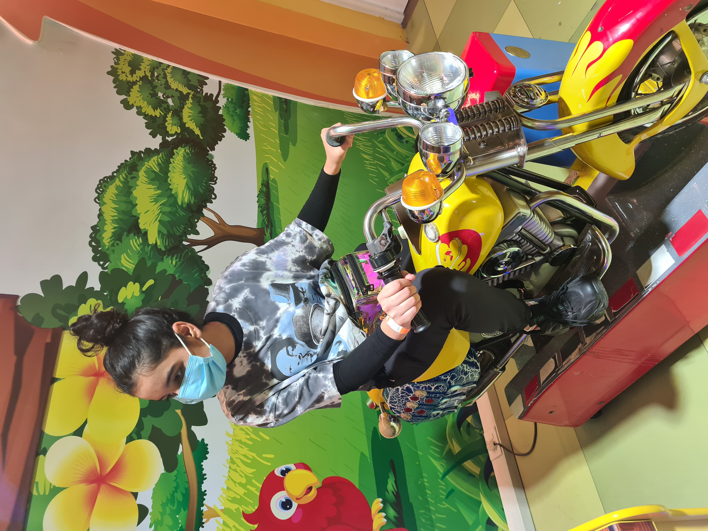

Pinky pinks
Please don't bite and kiss ew bro
I present to you Ms. Diya Bihani a.k.a Pinky Juliet
Heartless Bitch
Diya Bihani is a stone cold feeling-less bitch but if you hold on long enough you'll realise she is actually a sweet, partially high functioning sociopath with a gruesome work ethic and poor fashion sense.
Also mind you that you are looking at the CR of MCC Humanities Dept. and she is having a blast in college with her extremely physical friends who portray their passionate love using their teeth, lips and tongue. In case she gets flustered, she finds solace by photo bombing her seniors in the washroom. She also has so much attitude and a cocky accent (src: 2nd years) so tread carefully. Omnicron varient of covid has also manifested itself near her college and her loving pricipal has done nothing about it.
In the love life section, she is pursuing Anish P Gowda but in case she isn't able to score, she has vowed to settle for kissing herself *Self Love*. Her work is going fine cuz I like her videos without audio itself so it shows.
"I'm a Rider, Provider" ;)
This is Nothing
Sed tristique purus vitae volutpat ultrices. Aliquam eu elit eget arcu commodo suscipit dolor nec nibh. Proin a ullamcorper elit, et sagittis turpis. Integer ut fermentum.
Also Something
Sed tristique purus vitae volutpat ultrices. Aliquam eu elit eget arcu commodo suscipit dolor nec nibh. Proin a ullamcorper elit, et sagittis turpis. Integer ut fermentum.
Probably Something
Sed tristique purus vitae volutpat ultrices. Aliquam eu elit eget arcu commodo suscipit dolor nec nibh. Proin a ullamcorper elit, et sagittis turpis. Integer ut fermentum.